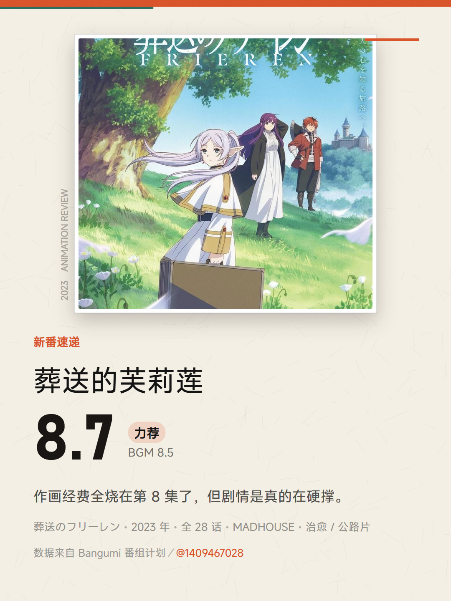
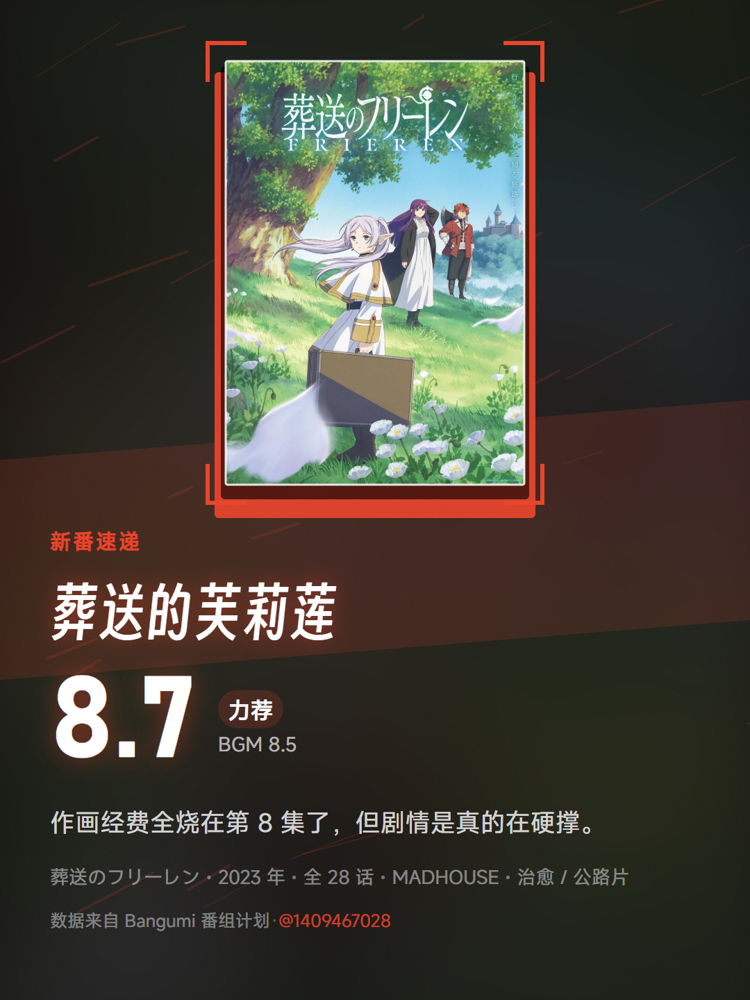
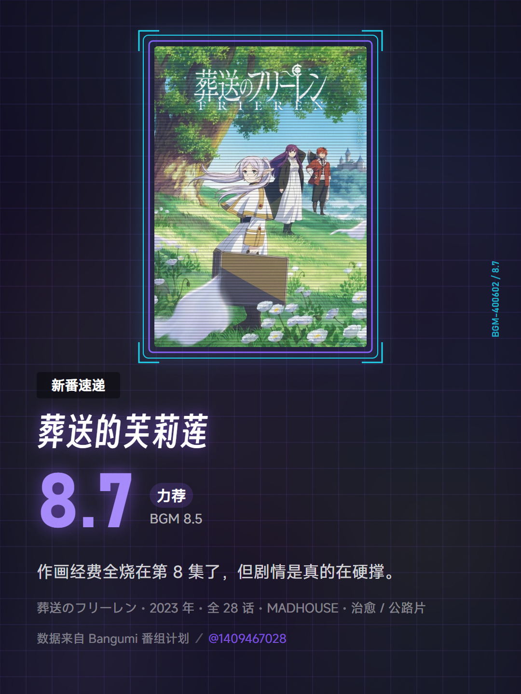
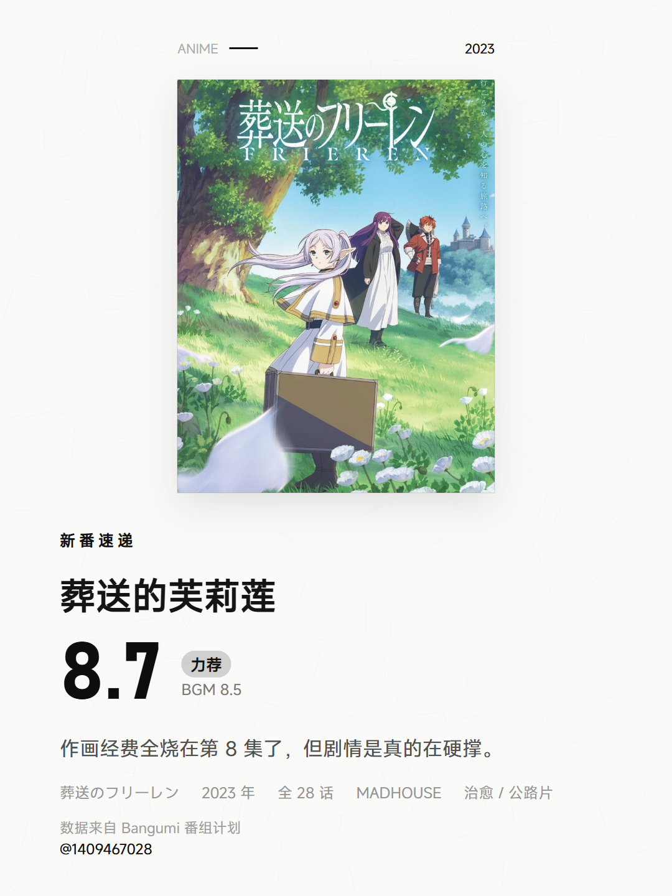
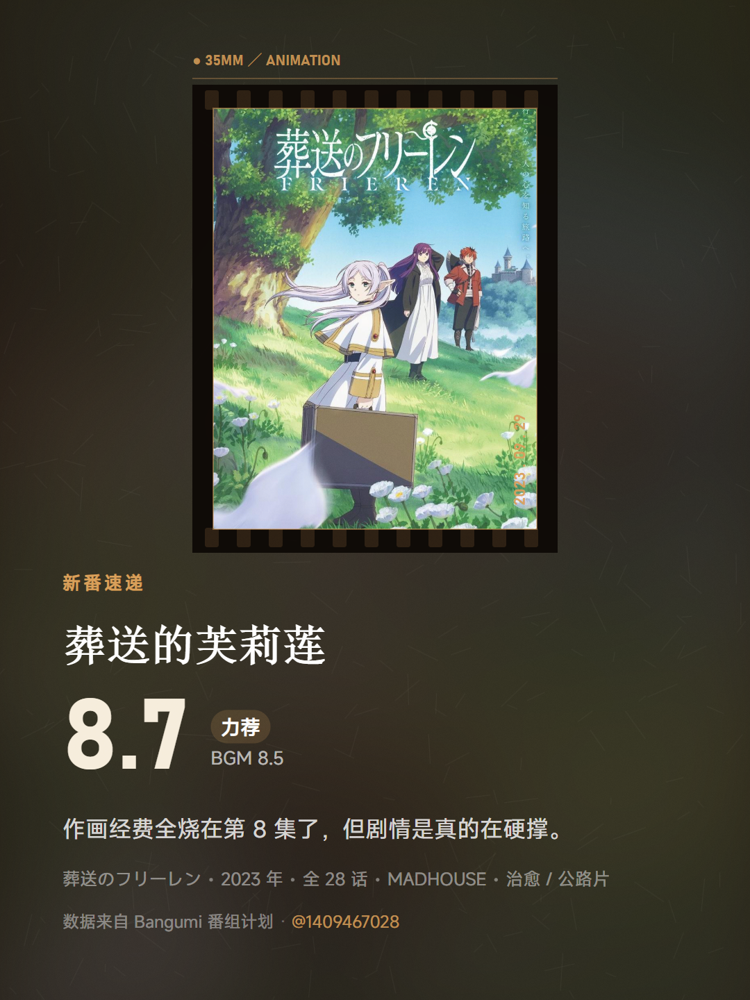
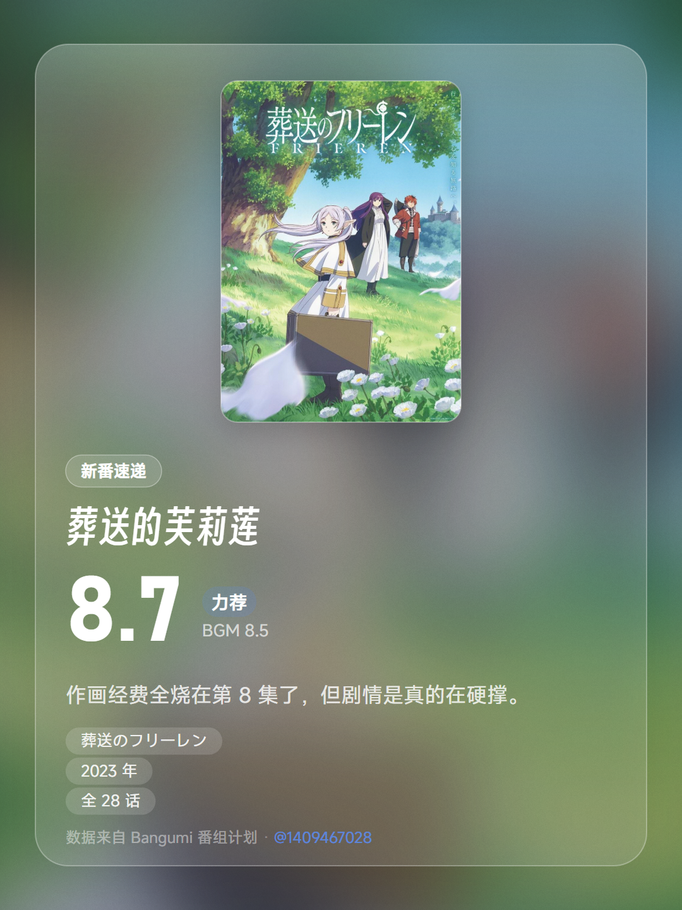
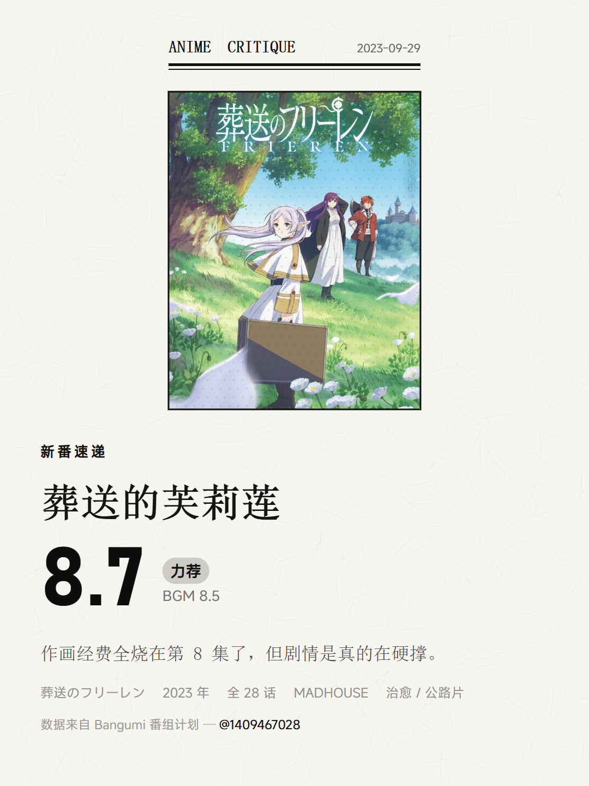
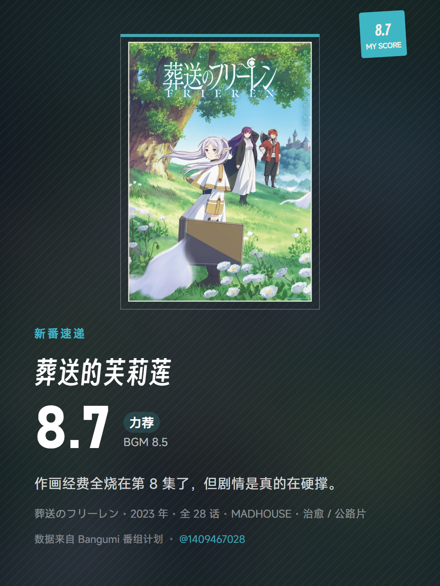

示例条目：葬送的芙莉莲（Bangumi #400602）· 我的评分 8.7 · Bangumi 站内 8.5 · 角标「新番速递」
同一张海报、同一段文案，只换主题得到的 8 种结果。全部 1080 × 1440，可直接发小红书。








实际使用时，每套主题还能再换 12 种配色，并可切换 3:4 / 4:5 / 9:16 / 1:1 四种比例与 720 / 1080 / 1440 三种导出宽度。
除主题外，评分、角标文案、吐槽短句、署名与页脚都可以自由填写。